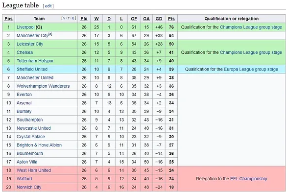
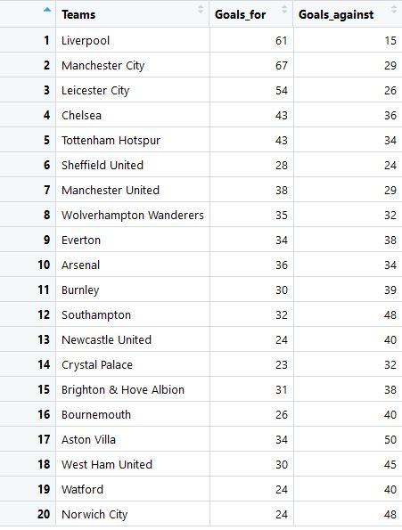
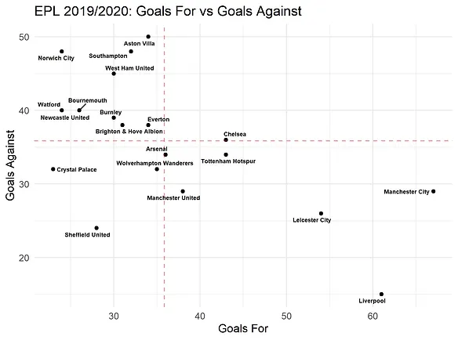
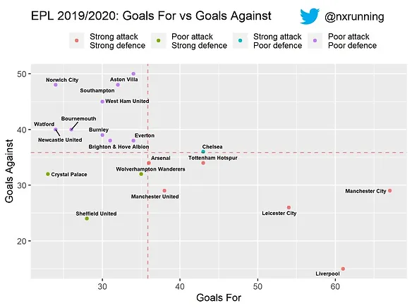

Web scraping opens doors to a myriad of data sources online. Be it text or numbers, web scraping allows us to extract online data into spreadsheets in our computer. With reference to code from FC RSTATS, this article documents a walk through on how to scrape football data from the web and visualising the data using open-source programming platform, R.
1. Required Libraries
library(rvest)
library(ggplot2)
library(plyr)
library(ggrepel)The above are the required libraries in this walk-through. The two main libraries are rvest and ggplot2, which are used to perform web scraping and plotting graphs respectively.The plyr library helps us in data cleaning while the ggrepel library helps to avoid overlapping of labels in the graphs.
2. Webpage
url <- "https://en.wikipedia.org/wiki/2019%E2%80%9320_Premier_League"In this article, we are scraping data from a Wikipedia page, showing information on the present English Premier League. You may access the page through the url link specified above. Specifically, I am interested in extracting information on the goals scored (GF) and goals conceded (GA) of each team from the table below.

3. Scrape the data
scraped_page <- read_html(url)
#Scraping the Team Column
Teams <- scraped_page %>%
html_nodes("h2+ .wikitable th+ td") %>%
html_text() %>%
as.character()
#Scraping the GF column
Goals_for <- scraped_page %>%
html_nodes("h2+ .wikitable td:nth-child(7) , th:nth-child(7) abbr") %>%
html_text() %>%
as.numeric
#Scraping the GA column
Goals_against<- scraped_page %>%
html_nodes("h2+ .wikitable td:nth-child(8)") %>%
html_text() %>%
as.numericFirst, we read the web page and save the data to the variable named scraped_page. Based on the above table, we are interested in three columns: Team, GF and GA. Each column is scraped separately and saved to a variable name (i.e. Teams, Goals_for, Goals_against). The codes look identical to one another since we are just repeating the scraping process. The difference is to specify the location of the data to be scraped. The respective locations for each location are specified in red above. For example, “h2+ .wikitable th+ td” tells the code to locate the team column in the scraped page. Each location can be easily found through the use of SelectorGadget. Click the link to see more details.
4. Cleaning the data
#Removing "\n" in the teams
Teams <- gsub("\n","",Teams)
#Remove NA case
Goals_for <- na.omit(Goals_for)
#Combining all scraped data into a dataframe
df <- data.frame(Teams, Goals_for, Goals_against)
#Renaming the values of Liverpool and Manchester City
df$Teams <- mapvalues(df$Teams, from=c("Liverpool (Q)","Manchester City[a]"), to=c("Liverpool", "Manchester City"))If you preview each of the variable, you will find some slight discrepancies. For example, many of the teams have a ‘\n’ in their names. Hence, the above code helps to clean the data and combines them into a nice spreadsheet below.

5. Data Visualisation
Following the code from FC RSTATS, we can create a scatter plot as below. Each point represents each team in the league. The x and y axes represent the goals scored and goals conceded respectively. The plot is divided into quadrants by the two dotted lines. The horizontal dotted line represents the average goals conceded while the vertical horizontal dotted line represents the average goals scored.
Based on this simple graph, we can see that the teams located on the bottom right are the better performing teams with both strong attack and defence. Conversely, the teams in the top left quadrant have the worst performance.

6. Dividing teams into four clusters
To better visualise the separation in performance, we can represent each quadrant in different colours. First, we create a new column in the spreadsheet and name it cluster. The code below will separate each team into their respective clusters based on their goal stats.
#Creating a cluster column
df$Cluster = 0
#Using for loop and ifelse statements to create different clusters
for(i in 1: nrow(df)) {
if (df$Goals_for[i] > mean(df$Goals_for) & df$Goals_against[i] < mean(df$Goals_against)) {
df$Cluster[i] = 1
} else if (df$Goals_for[i] < mean(df$Goals_for) & df$Goals_against[i] < mean(df$Goals_against)) {
df$Cluster[i] = 2
} else if (df$Goals_for[i] > mean(df$Goals_for) & df$Goals_against[i] > mean(df$Goals_against)) {
df$Cluster[i] = 3
} else {
df$Cluster[i] = 4
}
}
#Making the cluster columns a factor
df$Cluster = factor(df$Cluster, levels = c(1, 2, 3, 4),
labels =
c("Strong attack\nStrong defence",
"Poor attack\nStrong defence",
"Strong attack\nPoor defence",
"Poor attack\nPoor defence"))
Next, we will use the ggplot2 library to visualise our data. The comments in green help to explain each respective line of code.
#Specifying the variables and using colours to represent each cluster
ggplot(df, aes(x = Goals_for, y = Goals_against, label = Teams, colour = Cluster))+
#Plotting each team on the graph using a geometric point
geom_point()+
#Plotting the vertical dotted line to represent the average goals scored
geom_vline(xintercept=mean(Goals_for), linetype="dashed",
alpha = 0.4, colour = "red") +
#Plotting the horizontal dotted line to represent the average goals conceded
geom_hline(yintercept=mean(Goals_against), linetype="dashed",
alpha = 0.4, colour = "red") +
#Geom_text_repel helps to avoid overlapping of labels in the points
geom_text_repel(aes(Goals_for, Goals_against, label = Teams),
size = 2, colour = "black", fontface = "bold")+
#Labelling of axes and title
labs(title = "EPL 2019/2020: Goals For vs Goals Against",
x = "Goals For", y = "Goals Against",
colour = " ")+
#Specifying position of the legend
theme(legend.position = "top")
#Save the plot in your working directory
ggsave("output.jpeg", dpi = 300)
The resulting plot is below.

Full code for this article can be accessed through my github.
PS: If you actually count the number of points on the plot, there are only 19 instead of 20. This is because Newcastle and Watford happen to have exactly the same goal stats at the time of writing.